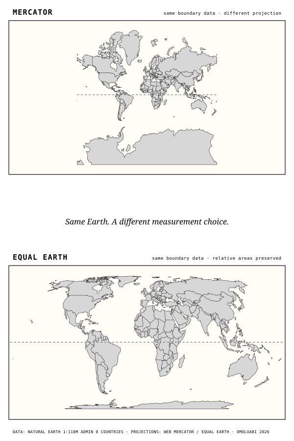

30.37M km²
Africa’s area
Africa is the world’s second-largest continent. Its land area is about 14 times Greenland’s.
Published proof of concept · 2026-09-14
Africa did not shrink. A dominant world-map projection made it look smaller.
On 4 September 2026, the United Nations General Assembly adopted Correct the Map, an African Union–backed resolution encouraging governments, schools, international organizations, and technology companies to use equal-area projections when comparative size matters—particularly the Equal Earth projection. The vote was 164 in favour, 1 against, and 6 abstentions.
The resolution does not enlarge Africa. It acknowledges that the familiar Mercator world map makes equatorial landmasses look smaller while enlarging high-latitude landmasses. Equal Earth preserves relative area, so it presents Africa’s area in its proper relationship to the rest of the world.
Editorial precision: the UN action is a non-binding recommendation, not a universal ban on Mercator and not an adjudication of borders. Mercator remains useful for navigation because it preserves compass bearing. Equal Earth is the stronger choice when the question is comparative size.

30.37M km²
Africa is the world’s second-largest continent. Its land area is about 14 times Greenland’s.
2.17M km²
On Mercator, Greenland can look comparable to Africa. It is not.
14×
The contrast is a direct demonstration of why an area-preserving map matters for public scale comparisons.
0
A sphere cannot be flattened without distortion. A responsible map says which property it protects and what it sacrifices.
| Question | Mercator | Equal Earth | Omoluabi editorial rule |
|---|---|---|---|
| Relative land area | Distorted, increasingly toward the poles. | Preserved. | Use Equal Earth or another equal-area projection when comparing the scale of countries, regions, climate impact, resources, population, or land. |
| Compass bearing | Preserved along rhumb lines; designed for navigation. | Not preserved. | Do not call Mercator “wrong” for a navigational task. Name its purpose. |
| Shape and distance | Shape is locally preserved, but scale grows sharply away from the equator; distances are not globally reliable. | Area is preserved, while shape and distance are distorted, especially toward the poles. | Never describe a flat map as the whole truth. Declare the projection and its trade-off. |
| Political consequence | Can make the Global South appear physically smaller in a map culture used in schools, media, and platforms. | Corrects the area relationship but does not itself repair unequal representation or historical injustice. | Mark this as an evidence-based interpretation, not a measurable causal claim about every policy outcome. |
This is not a decorative before-and-after. Each map is treated as a documented claim with a projection, boundary source, coordinate system, provenance, accessibility description, and limits.
| Claim | Status | What the evidence establishes | What it does not establish |
|---|---|---|---|
| The UN adopted Correct the Map on 4 September 2026. | Confirmed | The General Assembly adopted the text by recorded vote. | A binding mandate that eliminates Mercator everywhere. |
| Equal Earth shows Africa’s relative area more accurately than Mercator. | Confirmed | Equal Earth is an equal-area projection; Mercator is not. | That Equal Earth preserves every cartographic property. |
| Mercator’s dominance has materially caused Africa’s political marginalization. | Interpretation | Maps shape visual perception; the resolution and campaign identify cognitive, educational, cultural, geopolitical, and socioeconomic stakes. | A single measurable causal pathway from a classroom map to any particular political outcome. |
| The UN agreed Africa’s “actual dimensions.” | Clarified | The UN endorsed using equal-area projection where relative size matters. | A claim that a flat map can show all dimensions—area, shape, distance, and direction—perfectly at once. |
Before publishing a map, state what it preserves, what it distorts, whose names and boundaries it uses, and what it is being asked to prove.
A map is never just a picture of power. It is part of the evidence by which power is seen.